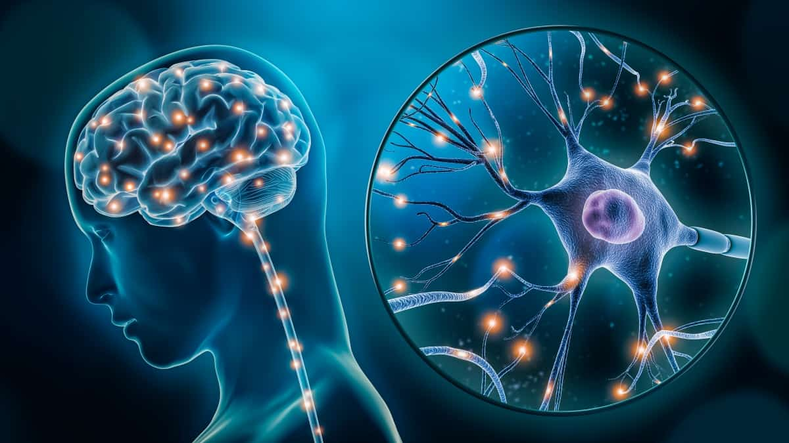
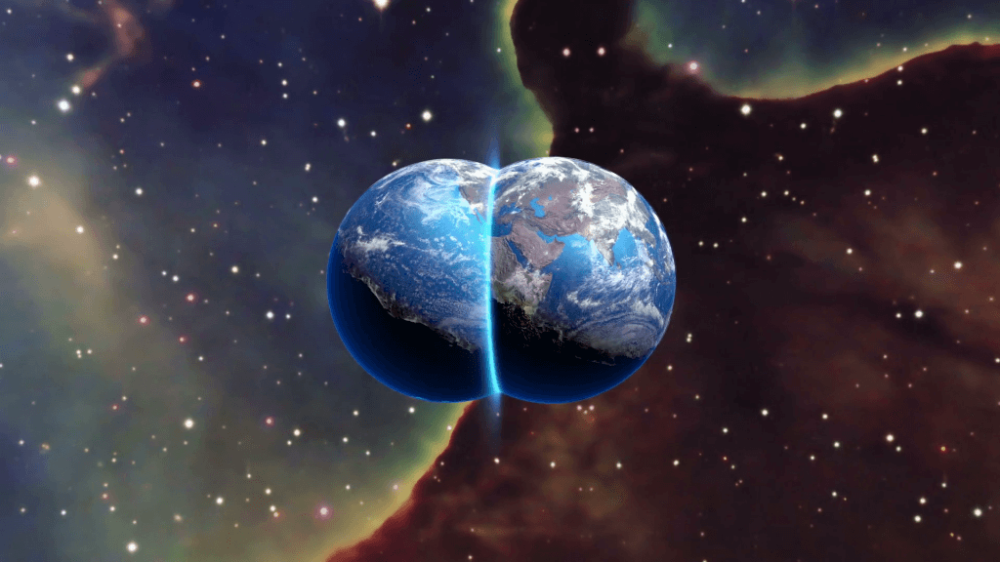
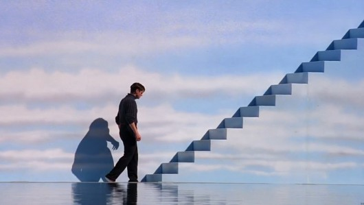

Teorida da Simulação
A teoria sugere que nossa realidade pode ser apenas uma simulação extremamente avançada, criada por uma civilização superior ou por inteligências artificiais.
Ler MaisO que significa realmente existir? Nesta seção, exploramos teorias filosóficas, científicas e psicológicas que questionam a realidade, a consciência humana e o sentido da própria existência
A teoria sugere que nossa realidade pode ser apenas uma simulação extremamente avançada, criada por uma civilização superior ou por inteligências artificiais.
Ler Mais
Cientistas e filósofos ainda tentam entender como pensamentos, emoções e percepção surgem no cérebro humano e o que realmente define a consciência.
Ler MaisA estranha sensação de já ter vivido um momento específico intriga pesquisadores há décadas. Alguns acreditam que seja apenas uma falha cerebral, enquanto outros sugerem algo mais profundo.
Ler Mais
Algumas teorias afirmam que existem infinitas versões da realidade, onde escolhas diferentes criam caminhos completamente distintos.
Ler Mais
Filósofos questionam há séculos se aquilo que enxergamos é realmente o mundo verdadeiro ou apenas uma interpretação criada pela mente.
Ler MaisO cérebro humano processa informações tão rapidamente que nossa percepção da realidade acontece alguns milissegundos depois dos acontecimentos reais.